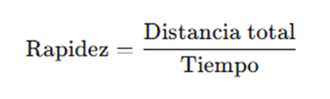
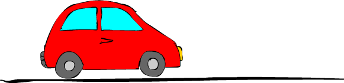

Rapidez
La rapidez es una magnitud física escalar, lo que significa que solo tiene valor numérico y unidad, pero no tiene dirección.
Indica qué tan rápido se mueve un objeto, sin importar hacia dónde. Se calcula como la distancia total recorrida dividida por el tiempo que tomó recorrer esa distancia.

Ejemplo:
Si un auto recorre 100 kilómetros en 2 horas, su rapidez promedio es 50 km/h.

Fig.10: Auto en cmovimiento